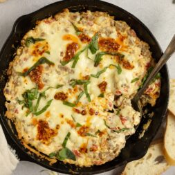

4 Ingredient Pesto Tortilini Bake

Credit: Everyday Dishes https://creativecommons.org/licenses/by-nc/4.0/
Ingredients
1 (9 ounce) package tri-color cheese tortellini
1 cup prepared pesto
2 slices prosciutto, chopped
1 cup shredded mozzarella cheese, divided
Steps
- Gather all ingredients. Preheat the oven to 350 degrees F (180 degrees C).
- Fill a large pot with lightly salted water and bring to a rolling boil; stir in tortellini
and return to a boil. Cook uncovered, stirring occasionally, until tortellini float to the
top and the filling is hot, about 3 minutes. Drain.
- Stir tortellini, prosciutto, pesto, and 1/2 cup mozzarella together in a large bowl.
- Pour into a baking dish. Sprinkle remaining mozzarella over the top.
- Bake in the preheated oven until cheese is melted and golden, about 10 minutes. Serve warm.
Home